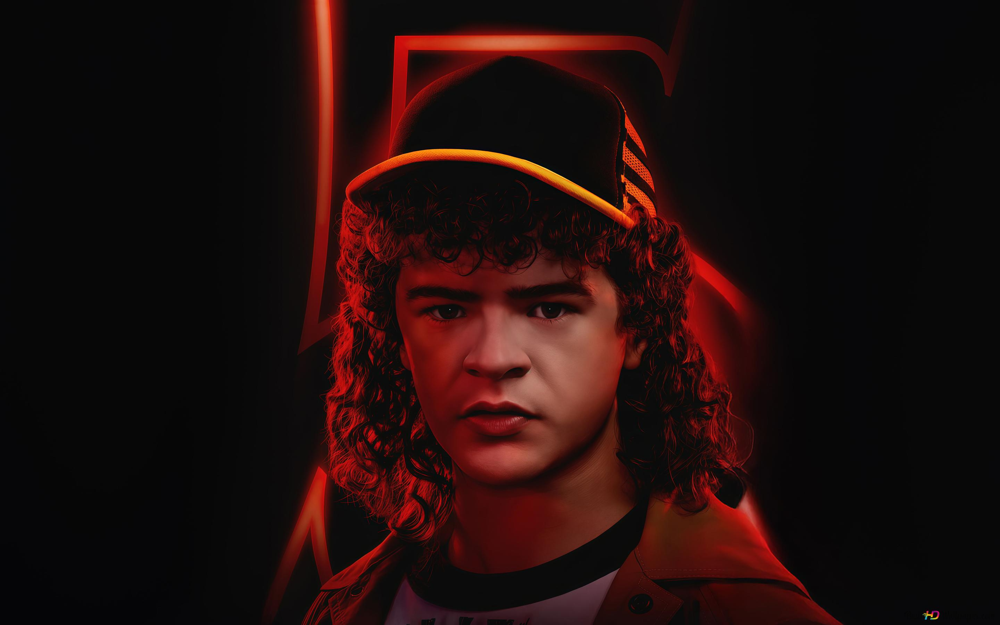

Dustin Henderson destaca por su gran inteligencia, sentido del humor y conocimientos científicos.
Siempre encuentra soluciones creativas a los problemas y aporta optimismo al grupo, convirtiéndose
en uno de los personajes más queridos de la serie.
Nombre del personaje: Dustin Henderson
Nombre en la vida real: Gaten Matarazzo
Edad del personaje: Aproximadamente 15 años
Lugar de nacimiento: Hawkins, Indiana
Pasatiempo favorito: Ciencia, tecnología y Dungeons & Dragons.